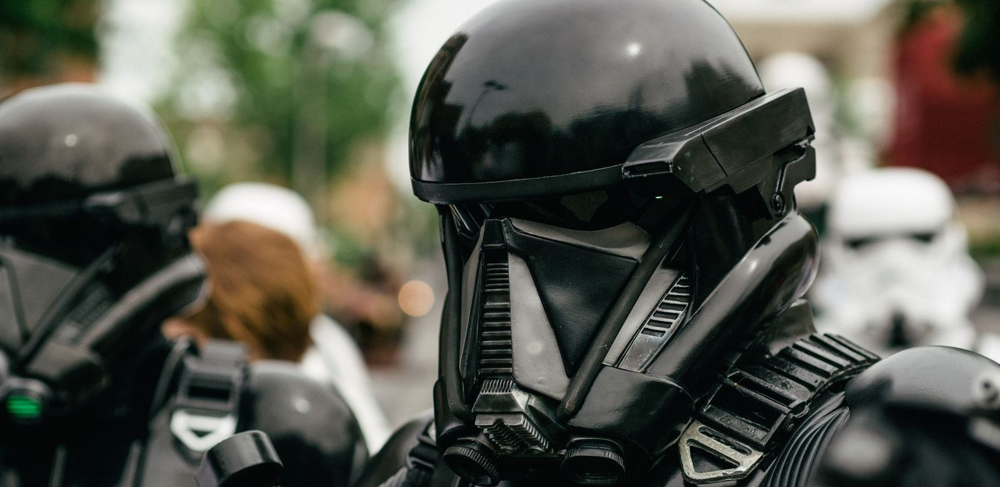

Star Wars kijken: in welke volgorde?
Er zijn 13 bioscoopfilms en 15 series. Hieronder staan ze allemaal, met jaartal: eerst de volgorde waarin ze uitkwamen, dan de volgorde van het verhaal, en daarna welke route het beste bij jou past.

In het kort
Er zijn 13 Star Wars-bioscoopfilms en 15 series. Negen films horen bij het hoofdverhaal en heten Episode I tot en met IX. De rest staat er los van.
Je kunt ze op twee manieren kijken, en die geven allebei een ander gevoel:
- Op volgorde van uitkomst. Je begint bij de film uit 1977 en kijkt daarna in de volgorde waarin de films gemaakt zijn. De grote verrassingen komen dan op het moment waarop ze bedoeld zijn.
- Op volgorde van het verhaal. Je begint bij het vroegste moment in de tijd en kijkt naar voren. Het verhaal loopt dan netjes door, maar je weet de twee grootste geheimen eerder.
Weet je het niet? Kijk op volgorde van uitkomst, en begin bij Episode IV – A New Hope. Dat is de film waar alles mee begon, en de verrassing in Episode V blijft dan een verrassing.
Welke volgorde past bij jou?
| Wat wil je? | Kijk dit | Hoeveel |
|---|---|---|
| Gewoon beginnen, zonder gedoe | Episode IV, V en VI | 3 films |
| Het hele hoofdverhaal zien | Episode IV, V, VI, dan I, II, III, dan VII, VIII, IX | 9 films |
| Het verhaal op tijdvolgorde | Episode I tot en met IX op nummer, met Rogue One vlak voor IV | 10 films |
| Beginnen met een kind | Eerst een serie: Skeleton Crew of Resistance | 1 serie |
| Alles, films en series door elkaar | De verhaalvolgorde verderop deze pagina | 28 titels |
Alle 13 films op volgorde van uitkomst
Dit is de volgorde waarin de films in de bioscoop kwamen. De nummers van de Episodes lopen expres door elkaar: de makers begonnen halverwege het verhaal.
- Star Wars: Episode IV – A New Hope (1977)
- Star Wars: Episode V – The Empire Strikes Back (1980)
- Star Wars: Episode VI – Return of the Jedi (1983)
- Star Wars: Episode I – The Phantom Menace (1999)
- Star Wars: Episode II – Attack of the Clones (2002)
- Star Wars: Episode III – Revenge of the Sith (2005)
- Star Wars: The Clone Wars (tekenfilm) (2008)
- Star Wars: Episode VII – The Force Awakens (2015)
- Rogue One: A Star Wars Story (2016)
- Star Wars: Episode VIII – The Last Jedi (2017)
- Solo: A Star Wars Story (2018)
- Star Wars: Episode IX – The Rise of Skywalker (2019)
- Star Wars: The Mandalorian and Grogu (2026)
De negen Episode-films vormen samen één doorlopend verhaal over de familie Skywalker. Rogue One en Solo vertellen een verhaal ernaast, en The Clone Wars uit 2008 is de tekenfilm die vooraf ging aan de serie met dezelfde naam.
Alle films en series op volgorde van het verhaal
Wil je het verhaal van begin tot eind volgen, dan is dit de volgorde. Hij komt van Lucasfilm zelf, de makers van Star Wars.
- The Acolyte: serie, 2024
- Episode I – The Phantom Menace: film, 1999
- Episode II – Attack of the Clones: film, 2002
- The Clone Wars: tekenfilm, 2008
- The Clone Wars: serie, 2008–2020
- Tales of the Jedi: serie, 2022
- Episode III – Revenge of the Sith: film, 2005
- Tales of the Empire: serie, 2024
- Tales of the Underworld: serie, 2025
- The Bad Batch: serie, 2021–2024
- Maul – Shadow Lord: serie, 2026
- Solo: A Star Wars Story: film, 2018
- Obi-Wan Kenobi: serie, 2022
- Andor: serie, 2022–2025
- Star Wars Rebels: serie, 2014–2018
- Rogue One: A Star Wars Story: film, 2016
- Episode IV – A New Hope: film, 1977
- Episode V – The Empire Strikes Back: film, 1980
- Episode VI – Return of the Jedi: film, 1983
- The Mandalorian: serie, 2019–2023
- The Book of Boba Fett: serie, 2021
- Ahsoka: serie, 2023
- Skeleton Crew: serie, 2024
- The Mandalorian and Grogu: film, 2026
- Star Wars Resistance: serie, 2018–2020
- Episode VII – The Force Awakens: film, 2015
- Episode VIII – The Last Jedi: film, 2017
- Episode IX – The Rise of Skywalker: film, 2019
Je hoeft ze niet allemaal te kijken. De series die tussen de films staan zijn zijverhalen: leuk als je meer wilt, maar je snapt de films ook zonder.
De korte route: alleen het hoofdverhaal
Wil je het verhaal van de familie Skywalker kennen zonder er weken mee bezig te zijn, kijk dan alleen deze negen films, in drie stukjes van drie:
- Begin hier: Episode IV (1977), V (1980), VI (1983). Luke Skywalker, Darth Vader en de eerste Death Star.
- Daarna het voorverhaal: Episode I (1999), II (2002), III (2005). Hoe Anakin Skywalker een Jedi werd, en daarna niet meer.
- En dan het vervolg: Episode VII (2015), VIII (2017), IX (2019). Een nieuwe generatie, dertig jaar later.
Wil je er één film aan toevoegen: kijk Rogue One (2016) vlak vóór Episode IV. Die film eindigt precies waar Episode IV begint.
Sommige fans kijken de negen films in een eigen volgorde: IV, V, II, III, VI. Zo blijft de onthulling in Episode V staan én zie je het voorverhaal op het spannendste moment. Dat is een fanvolgorde, geen officiële.
Beginnen met een kind
Star Wars begint niet per se bij een film. Voor jonge kijkers werkt een serie vaak beter: de afleveringen zijn kort en de toon is lichter.
Vanaf ongeveer 6 jaar. Star Wars Resistance (2018) en Skeleton Crew (2024) zijn de rustigste van allemaal. Skeleton Crew gaat over vier kinderen die verdwalen in het heelal, en is verteld vanuit hun kant.
Vanaf ongeveer 8 jaar. The Mandalorian, met Grogu erin, en daarna Episode IV, V en VI. De oudste films zien er ouder uit, maar ze zijn minder hard dan de nieuwe.
Vanaf ongeveer 10 jaar. De tekenfilmserie The Clone Wars en Rebels. Allebei gaan ze over oorlog, met verlies erin, maar wel getekend en per aflevering afgerond.
Bewaar voor later. Episode III – Revenge of the Sith is de donkerste van de negen: daarin verandert de held in de schurk. Rogue One is een oorlogsfilm met een zwaar einde. En Andor is gemaakt voor volwassenen; die staat wel tussen de andere series, maar hoort niet bij dezelfde leeftijd.
Waar kun je ze kijken?
Alle 15 series staan op Disney+, want ze zijn daar speciaal voor gemaakt. Bij de films ligt het anders: welke film op welke dienst staat, verandert een paar keer per jaar. Zoek de titel daarom op in de zoekbalk van je eigen dienst of in een filmgids, dan weet je het zeker en loop je niet achter een oud lijstje aan.
Wat komt er nog aan?
The Mandalorian and Grogu was de nieuwste film: die kwam op 20 mei 2026 in de Nederlandse bioscoop. De eerstvolgende aangekondigde titel is seizoen 2 van Ahsoka, vanaf 20 januari 2027 op Disney+. Zodra er een nieuwe Nederlandse bioscoopdatum bekend is, staat hij hier.
👪 Tip voor ouders
Star Wars is één merk, maar niet één leeftijd. Tussen Skeleton Crew en Andor zit een wereld van verschil, terwijl ze in dezelfde app naast elkaar staan. Kijk per titel het actuele advies na op Kijkwijzer voordat je iets aanzet.
Twee dingen om op te letten: Episode III is de zwaarste van de negen films, en de tekenfilmseries gaan ondanks hun uiterlijk over oorlog. Andersom valt Episode IV uit 1977 bij veel kinderen juist mee.
💡 Wist je dat?
De allereerste film heette gewoon Star Wars. Pas jaren later kreeg hij de ondertitel A New Hope en het nummer Episode IV erbij. In 2027 is die film vijftig jaar oud. Meer over Star Wars lees je hier.
Veelgestelde vragen
Hoeveel Star Wars-films zijn er?
Er zijn 13 bioscoopfilms. Negen daarvan horen bij het hoofdverhaal en heten Episode I tot en met IX. Daarnaast zijn er twee losse films (Rogue One en Solo), één tekenfilm (The Clone Wars uit 2008) en de nieuwste film, The Mandalorian and Grogu, die op 20 mei 2026 in de Nederlandse bioscoop kwam. Daarnaast bestaan er 15 series. Stand: 25 augustus 2026.
Wat is de chronologische volgorde van Star Wars?
Op volgorde van het verhaal begin je met The Acolyte, dan Episode I, II, de tekenfilm en serie The Clone Wars, Tales of the Jedi, Episode III, Tales of the Empire, Tales of the Underworld, The Bad Batch, Maul – Shadow Lord, Solo, Obi-Wan Kenobi, Andor, Rebels, Rogue One, Episode IV, V, VI, The Mandalorian, The Book of Boba Fett, Ahsoka, Skeleton Crew, The Mandalorian and Grogu, Resistance en tot slot Episode VII, VIII en IX.
Waarom beginnen veel mensen bij deel 4?
Omdat Episode IV uit 1977 de eerste film is die gemaakt is. In Episode V zit een grote onthulling over wie de vader van Luke Skywalker is. Kijk je eerst Episode I tot en met III, dan weet je dat antwoord al voordat de verrassing komt. Daarom raden veel fans aan om te beginnen bij Episode IV.
In welke volgorde kijk je Star Wars met kinderen?
Begin met een serie in plaats van met een film: Star Wars Resistance of Skeleton Crew zijn het rustigst, en de tekenfilmserie The Clone Wars sluit aan op de films. Wil je toch met de films beginnen, kies dan Episode IV. Episode III is de donkerste film van de negen; bewaar die voor later. Kijk voor het actuele leeftijdsadvies op Kijkwijzer.
Waar kun je alle Star Wars-films en -series kijken?
Alle series staan op Disney+, want ze zijn daar speciaal voor gemaakt. Voor de films geldt dat niet altijd: welke film op welke dienst staat, verandert een paar keer per jaar. Zoek de titel daarom op in de zoekbalk van je eigen dienst of in een filmgids.
Meer weten? Op de Star Wars-pagina staan de helden, de Force en de schurken. Ga je bouwen in plaats van kijken, lees dan LEGO Star Wars voor beginners. En wil je de andere grote filmreeks op volgorde, dat is de Avengers-volgorde.
Alle titels en jaartallen gecontroleerd op 25 augustus 2026. De verhaalvolgorde volgt de officiële kijkgids van Lucasfilm op starwars.com. De Nederlandse bioscoopdatum van The Mandalorian and Grogu (20 mei 2026) komt van Pathé; de datum van Ahsoka seizoen 2 (20 januari 2027) is aangekondigd door Lucasfilm.